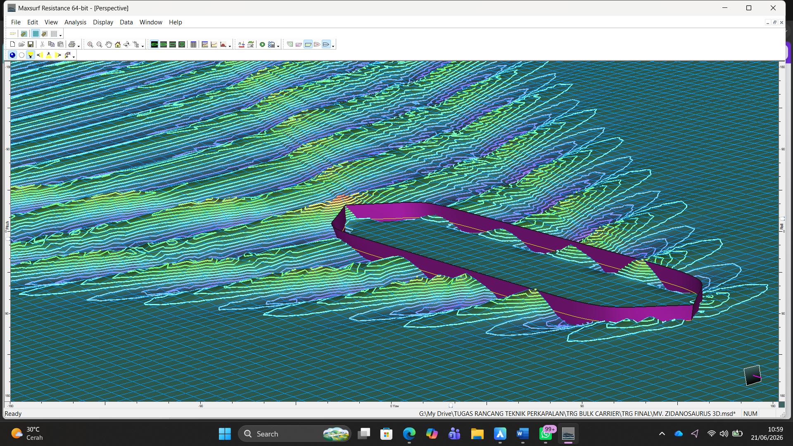

Education
Bachelor of Naval Architecture
Universitas Diponegoro
About Me
I am a Naval Architecture graduate from Diponegoro University, specializing in Ship Design, Hydrodynamic Analysis/CFD, and Maritime Robotics[cite: 1, 2]. Possessing practical experience in vessel classification surveys at BKI and shipyard operational management at PT Dok & Perkapalan Kodja Bahari[cite: 1, 2]. Supported by a strong leadership background as the General Manager of the Aterkia robotics team, I am adept at solving complex engineering challenges, integrating cross-divisional workflows, and implementing mechanical fabrication for marine innovations[cite: 1, 2].
Leveraging this solid technical foundation, I am fully prepared to drive impactful contributions across vessel construction, shipyard production planning, port infrastructure developments, and advanced hydrodynamic assessment projects within the broader maritime sector[cite: 1, 2].
Pengalaman Kerja Profesional
Magang Asisten Surveyor
Biro Klasifikasi Indonesia (BKI) Cilegon
Asisten Dosen
Teknik Perkapalan UNDIP
Magang Engineer
PT Dok & Perkapalan Kodja Bahari (Jakarta II)
Pengalaman Organisasi & Kepemimpinan
General Manager
Aterkia Diponegoro Robotics Team
Kepala Divisi Riset & Pengembangan
Himpunan Mahasiswa Teknik Perkapalan UNDIP
Staf Mekanik
Aterkia Diponegoro Robotics Team
Keahlian Perangkat Lunak
AutoCAD
Desain 2D[cite: 1, 2]
Rhinoceros
Desain 3D[cite: 1, 2]
SOLIDWORKS
Desain 3D[cite: 1, 2]
Maxsurf
Desain 3D[cite: 1, 2]
STAR-CCM+
Analisis Hidrodinamika[cite: 1, 2]
Lumion
Render / 3D Animasi[cite: 1, 2]
Soft Skills Continuum
Bidang yang Diminati
Galeri Studi Kasus & Proyek Teknik

Inisiasi Perubahan Metode Tugas Desain[cite: 1, 2]

Prototipe Autonomous Offshore Supply Vessel[cite: 1, 2]

Perancangan Kapal Ro-Pax Green Energy[cite: 1, 2]

Sistem Kolam Ikan Lele (KKN Demak)[cite: 1, 2]

Wahana Otonom Catamaran 'ATEROLAS'[cite: 1, 2]

Analisis Pelindung Propeller Kaplan Ka4-70[cite: 1, 2]